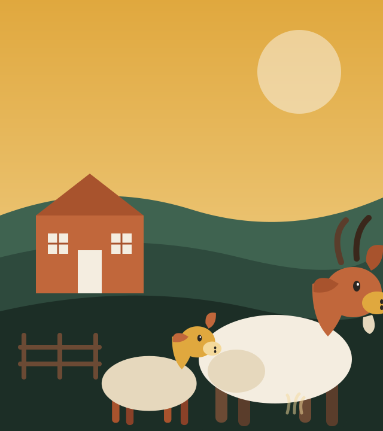
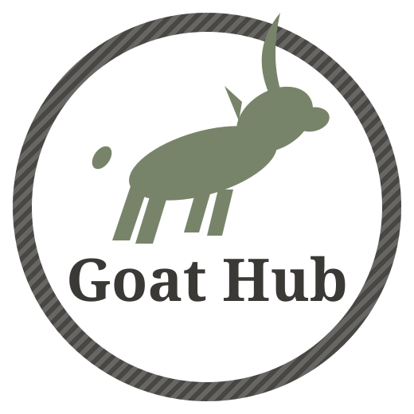
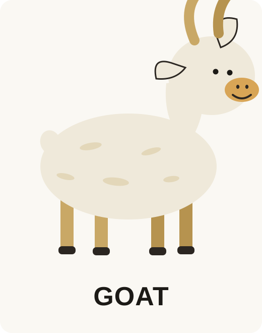
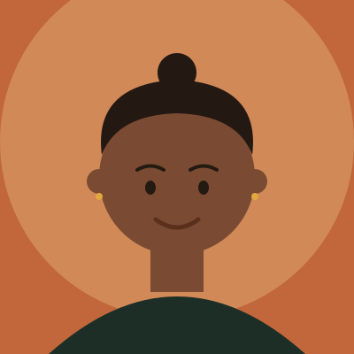

Three generations, one herd, and a whole lot of respect for the land underneath it.


Goat Hub started with two Nubian does, a rented field, and a lot of guesswork. Today it's a 120-acre working farm with a licensed dairy parlor, a fiber room, and a herd of more than 300 goats across six breeds.
We still run it the way we started: small enough to know every goat's name, careful enough to keep records on every one of them, and stubborn enough to do rotational grazing the hard way because it's the right way.
Every decision on the farm — feed, fencing, shelter, vet care — is weighed against what's actually best for the goats, not just the bottom line.
Rotational grazing, cover cropping and careful stocking rates keep our soil and pasture healthier every single year, not just this one.
We sell locally, mentor new small-farm owners for free, and open the gate for school tours every spring and fall.

From the moment a kid hits the ground, it's tagged, logged, and given a name our whole team actually uses. That's how a 300-goat herd still gets treated like 300 individuals instead of one big flock.
27 years raising goats, and still out in the pasture every morning at six.

Runs our health records, breeding schedule, and welfare audits.
Turns the morning milk into cheese, yogurt, and soap by afternoon.
Two Nubian does and four acres of rented pasture.
Opened our on-site licensed dairy parlor and creamery.
Grew to 120 acres and six registered breeds.
Now supplying dairies, butchers and small farms region-wide.